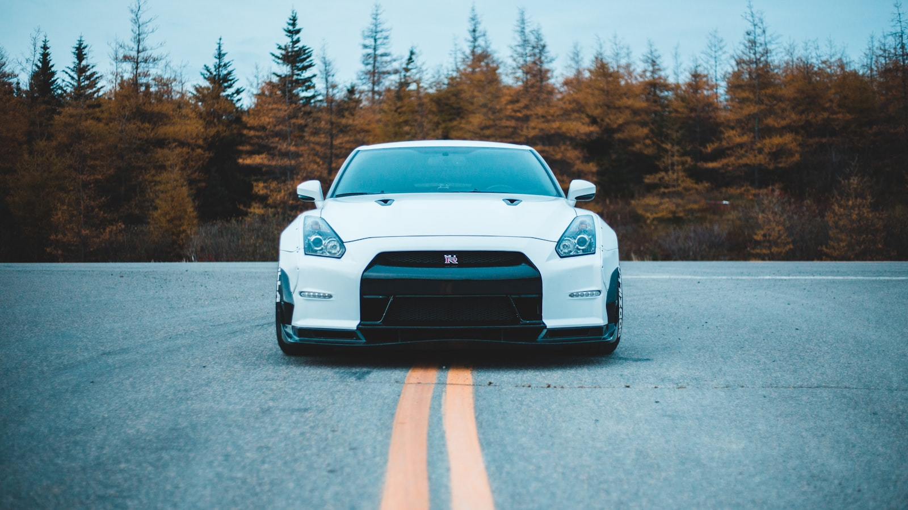
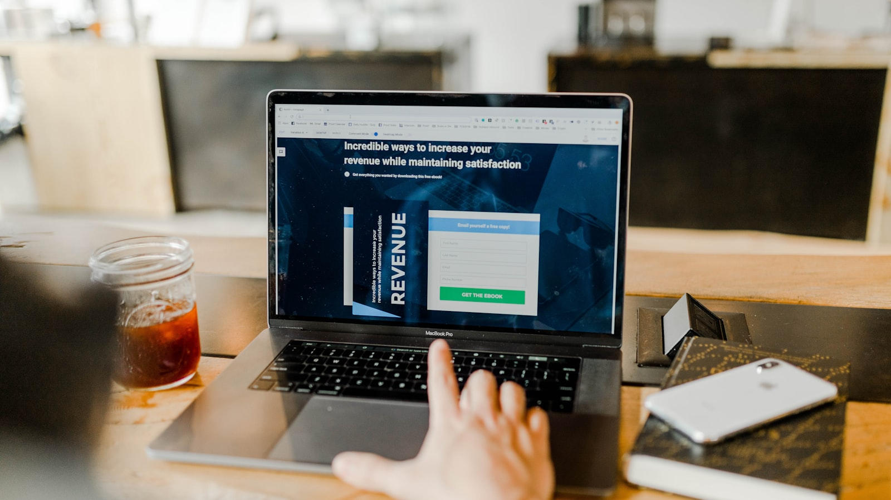
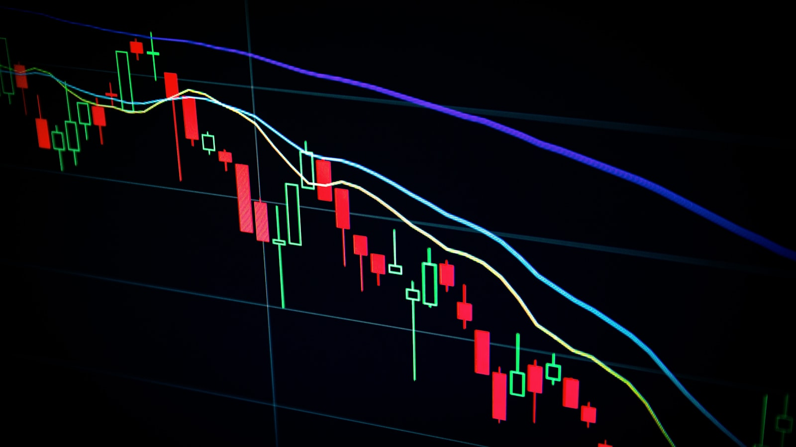
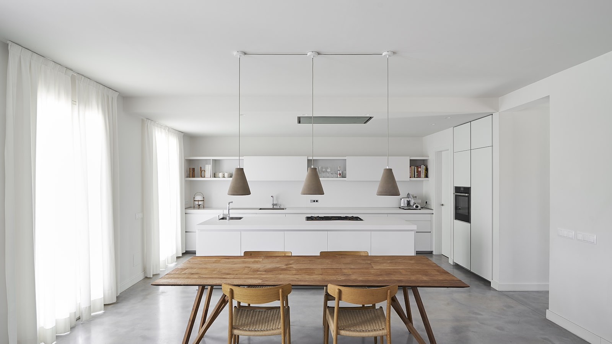

글로벌 · ETF 흐름
월스트리트가 다시 한국으로 — '메모리 ETF'에 한 달 만에 60억 달러
Roundhill 메모리 칩 특화 ETF에 60억 달러가 유입됐다.
월스트리트가 한국을 보는 시선, 그리고 한국이 글로벌 자금에 어떻게 반응하는가.

Roundhill 메모리 칩 특화 ETF에 60억 달러가 유입됐다.

통합계좌 제도가 글로벌 자산운용사의 매매 의사결정을 빠르게 바꾸고 있다.

방향은 9월 점도표가 정한다.

잠재적 영향은 크지만 정책의 진척은 느리다.
거버넌스 압력 vs 시장 인프라.